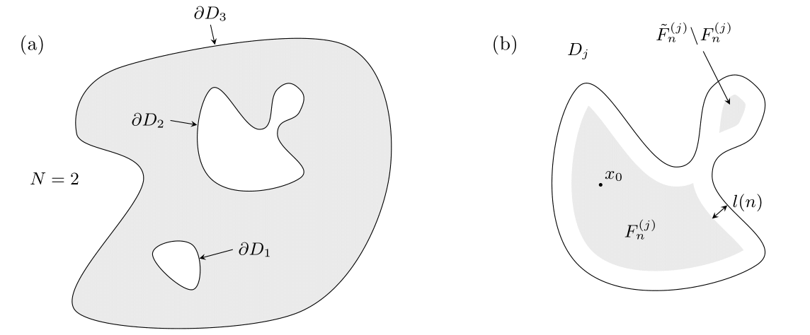
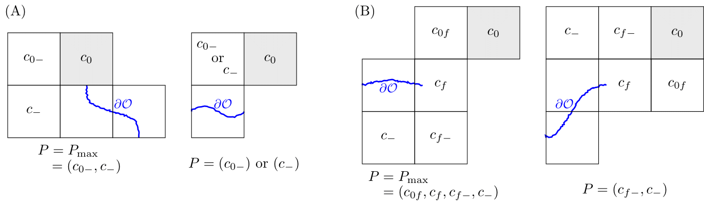
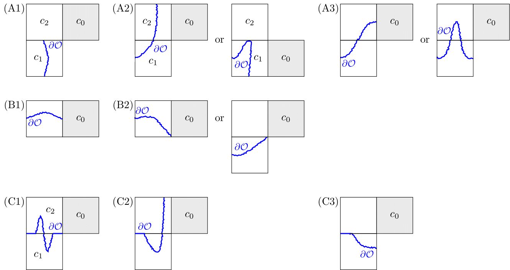
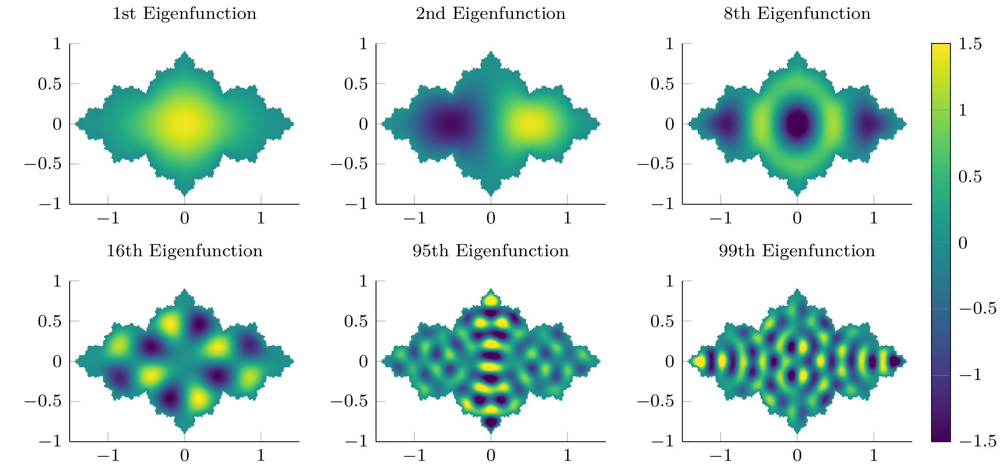
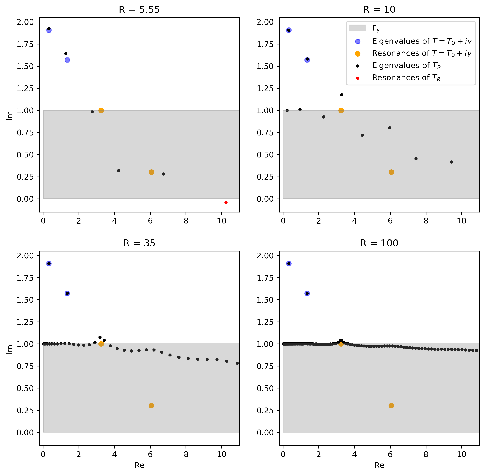
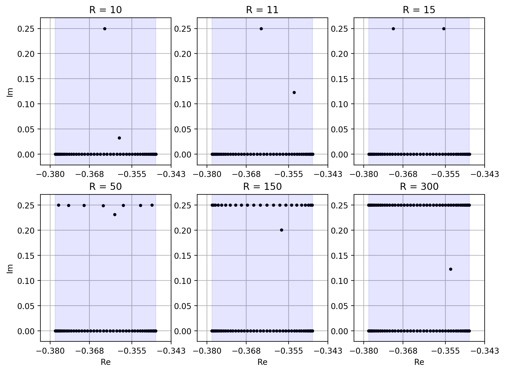
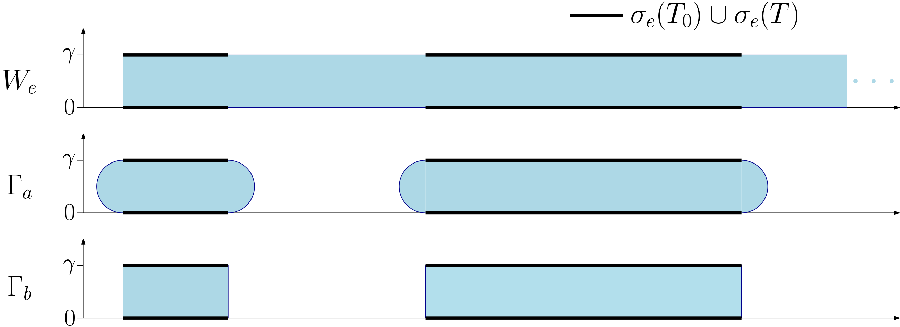
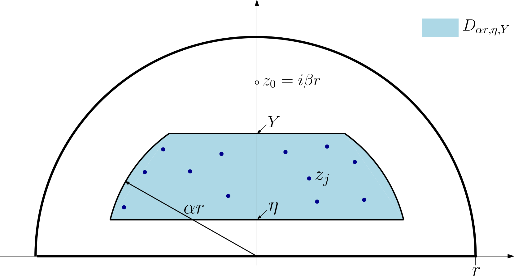
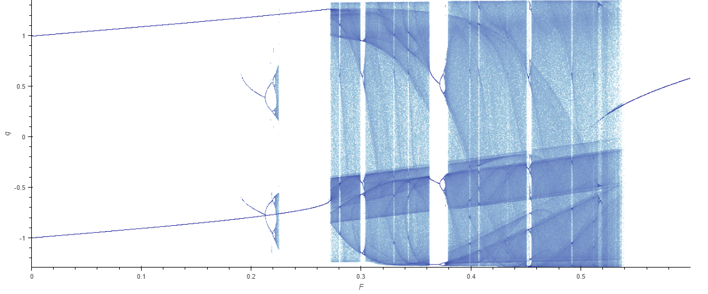
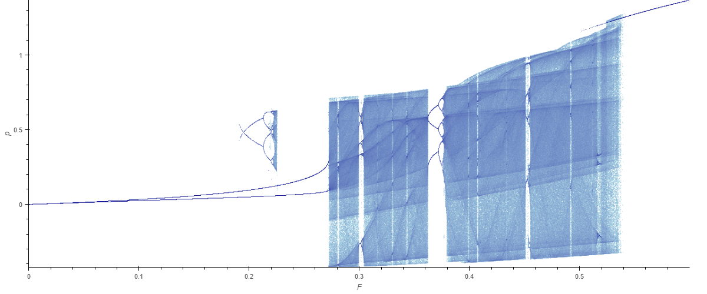

Alexei Stepanenko
Research associate in applied analysis
Welcome to my personal website!
I am a research associate at Cardiff University School of Mathematics.
Prior to this, I was a visiting postdoctoral research fellow at the Centre for Mathematical Sciences, University of Cambridge, mentored by Anders Hansen.
I undertook my PhD at Cardiff University, supervised by Jonathan Ben-Artzi and
Marco Marletta.
I am currently organising the Cardiff Analysis Seminar and the Cardiff Mathematics of Deep Learning reading group.
E-mail: stepanenkoa@cardiff.ac.uk
Address:
School of Mathematics, Cardiff University,
Abacws, Senghennydd Road,
Cathays, Cardiff, Wales, UK,
CF24 4AG
Research Interests
- Mathematics of deep learning, especially applications to computation of PDEs and spectra.
- Spectral theory, especially:
- Laplace operators on domains with rough and fractal boundaries
- Non-self-adjoint Schrödinger operators
- Numerical approximation of spectra and resonances
Publications and preprints
- Lieb-Thirring and Jensen sums for non-self-adjoint Schrödinger operators on the half-line,
(w/ Leonid Golinskii) arXiv:2111.09629 (2021)
- Computing eigenvalues of the Laplacian on rough domains,
(w/ Frank Rösler) arXiv:2104.09444, Published online in Mathematics of Computation(2021)
- Bounds for Schrödinger operators on the half-line perturbed by dissipative barriers,
arXiv:2010.05663, Integral Equations and Operator Theory 93, 60 (2021)
- Spectral inclusion and pollution for a class of dissipative perturbations,
arXiv:2006.10097,
Journal of Mathematical Physics 62, 013501 (2021)
Image Gallery
Images from past and current research.









